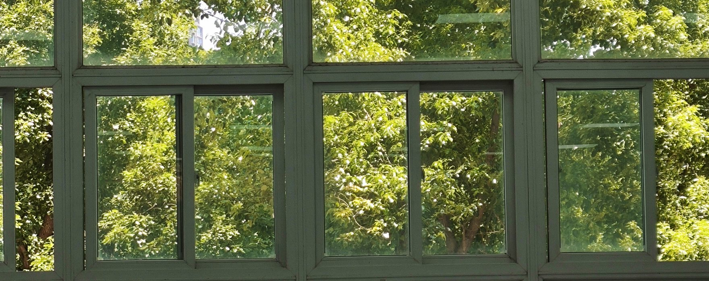

▦
照片
拍下来的瞬间 —— 不用配文字，图在，那一刻就在。
Some moments refuse to be rewritten.
照片流
合集
零散照片
☼
这里还空着
管理员登录后点「上传照片」，传几张来看看。
▦
这个合集还没有照片
上传照片时选「归入合集」就能放进来。

拍下来的瞬间 —— 不用配文字，图在，那一刻就在。
Some moments refuse to be rewritten.
这里还空着
管理员登录后点「上传照片」，传几张来看看。
这个合集还没有照片
上传照片时选「归入合集」就能放进来。
可以一次选多张。上传前会自动压到长边 1600px，手机拍的原图也不用担心。
合集开头的那段话会显示在合集里面、照片的上面 —— 想写点什么就写点什么。